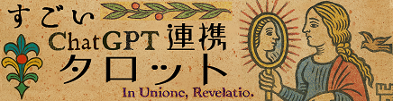

▲保育TAROT TOP|▲BLOG|▲Youtube|▲普通のTAROT
ケルト十字法
chatGPTと連携して、マルセイユタロットの大アルカナ22枚のみで占います。
うまくいかない時は・・・
- ChatGPTの画面に履歴が残っている場合、文字を消して画面を閉じて、再度このページからリンクを踏んでください。
- または、以下に表示されたプロンプトをコピーして、ChatGPTの画面に貼り付ければ確実です。
- XのGrokやCopilot、Claude、Geminiなど、他のAIアシスタントでも問題なく動作します。
プロンプト：